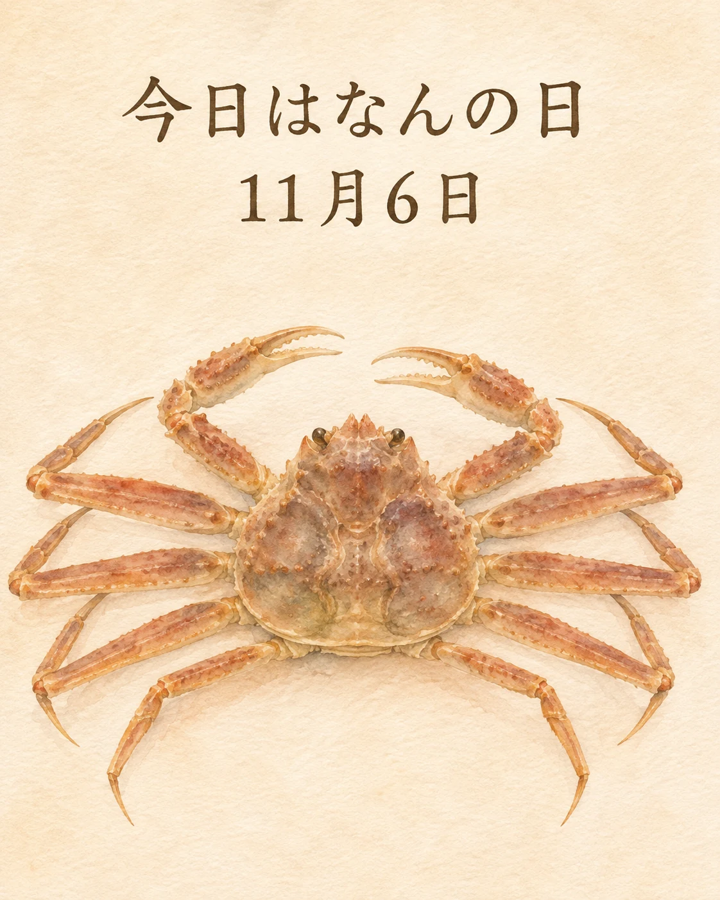

11月6日は「松葉ガニ漁の解禁日」です🦀
日本海の冬の味覚、松葉ガニ。京都の海でも、11月6日からズワイガニ漁の季節が始まります。漁期や大きさなどに決まりを設け、海の恵みを守りながら受け継がれてきた営みです。
松葉ガニは、オスのズワイガニの呼び名。京都北部では「間人ガニ」や「舞鶴かに」といった名でも親しまれています。
旬の知らせは、季節が進んだことを教えてくれます。食材が育まれる海や、漁に携わる方々に思いを寄せながら、和食が大切にする季節の味わいを感じたいですね。
季節の味わいとともに、心ほどけるひとときをお過ごしください✨
京都の海と、冬の食文化
京都府の案内では、ズワイガニの水揚げ期間は11月6日から翌年3月20日まで。舞鶴市水産協会も、オスの漁期と、海の豊かさを守る漁獲管理の取り組みを紹介しています。2026年の解禁日も11月6日と発表されています。
この記事は季節と食文化の紹介です。当店のカニの入荷・在庫・当日の提供や、漁・催事への参加を案内するものではありません。
出典：京都府「ズワイガニ漁業（応用編）」、京都府「ズワイガニってどんなカニ？」、舞鶴市水産協会「舞鶴かに」、海の京都観光圏「冬の名物グルメ」、株式会社フーズクリエーション・2026年漁解禁日の発表（日付照合）（2026年11月6日確認）。